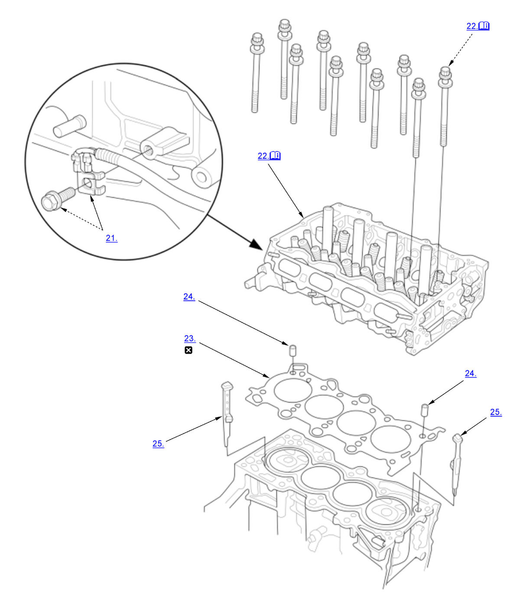
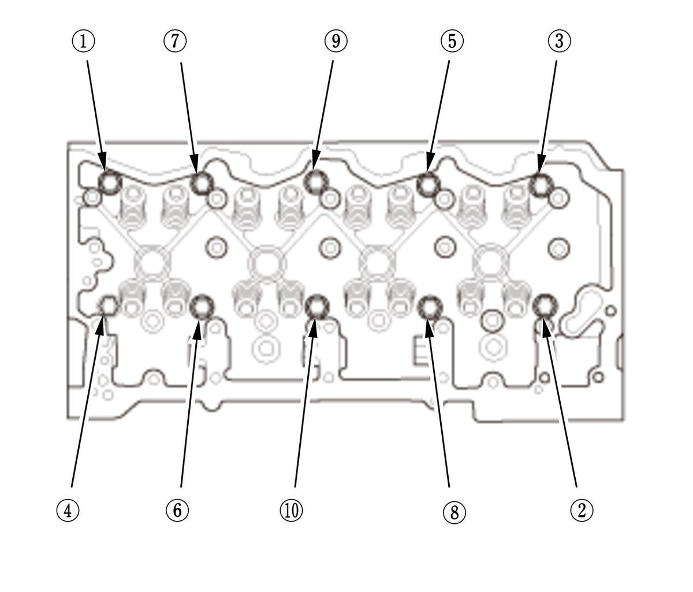

Cylinder Head Removal and Installation (K20C1) (2017 2018 2019 2020 2021): Removal: Procedure
NOTE:
Numbered call-outs in figure pertain to list numbers in following procedure.

Courtesy of HONDA, U.S.A., INC. |
Detailed information, notes, and precautions |
 |
Replace |
- Fuel Pressure - Relieve
- Engine Coolant - Drain
- 12 Volt Battery - Remove
- Air Cleaner - Remove
- 12 Volt Battery Base - Remove
- TWC Assembly - Remove
- Turbocharger - Remove
- VTC Oil Control Solenoid Valve B - Remove
- VTC Strainer - Remove
- EVAP Canister Purge Valve, Purge Joint, and Purge Pipe - Remove
- Charge Air Cooler Pipe - Remove
NOTE: Remove the necessary part(s).
- Vacuum Pump Holder - Remove
- Thermostat Housing - Remove
- Intake Manifold - Remove
- High Pressure Fuel Pump - Remove
- Injector - Remove
- Cylinder Head Cover - Remove
- Cam Chain - Remove
- Camshaft - Remove
- Rocker Arm Assembly - Remove
- Ground Cable - Remove
- Cylinder Head - Remove

Courtesy of HONDA, U.S.A., INC.1. Remove the cylinder head bolts. To prevent warpage, loosen the bolts in sequence, 1/3 turn at a time, repeat the sequence until all bolts are loosened. 2. Remove the cylinder head.
- Cylinder Head Gasket - Remove
- Dowel Pin - Remove
- Coolant Separator - Remove